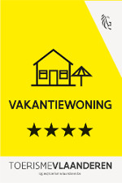

Bed 'n Blues.

De goed uitgeruste vakantiewoning Bed ‘n Blues is centraal gelegen in het centrum van Halen.
Je kan er terecht voor een weekendje
weg,
maar ook zakenmensen die op bezoek zijn bij een bedrijf in de buurt zullen de comfortabele woning met gratis internetverbinding
op prijs stellen. Bed ‘n Blues is dan ook een oase van rust met een ontspannen sfeer, waar muziek en kunst steeds samengaan.
Deze accommodatie ligt werkelijk in het hart van deze sympathieke kleinschalige stad, waar alles dichtbij ligt en toch is het hier rustig vertoeven.
De winkels, de bakker, de slager, de supermarkten, horeca, en sportinfrastructuur … zijn allen binnen handbereik zonder storende drukte. Maar daarbij is Bed ‘n Blues ook goed gelegen voor wie buiten het centrum moet zijn. Op een boogscheut ligt de op-e
afrit van de E314 en de verbindingen naar omliggende gemeenten en steden zijn bijzonder vlot.
Zo heeft Bed ‘n Blues een perfecte ligging
voor zij die richting Leuven of Brussel willen rijden, en korter bij ligt Diest op 5 km, Hasselt op 15 km, Sint-Truiden ligt op 24 minuten rijden en Maastricht bevindt zich op 40 km.
Het dichtstbijgelegen treinstation is Diest, afhaling is mogelijk.
Het gastenverblijf heeft beschikking over een eethoek en zithoek met een flatscreen-TV. Daarnaast is er tevens een zonneterras en tuin. De moderne keuken is voorzien van een vaatwasser, koelkast met vriesvak, oven, magnetron en een elektrisch kookfornuis.
De badkamer is uitgerust met een douche en een haardroger. Linnengoed is beschikbaar. Gratis parkeergelegenheid is voorhanden bij de accommodatie, die ook toeristische informatie biedt.
Verschillende activiteiten
worden aangeboden in de omgeving, zoals wandelen, fietsen, vissen en paardrijden. Belangrijkste troef is de centrale ligging , waardoor alle fiets- en wandelknooppunten vlakbij zijn. Je kan aankomen tussen 14.00u en 18.00u of op aanvraag en vertrekken voor 11.00u.
VOORZIENINGEN:
- Niet-roken in gehele accommodatie
- Internet : WiFi is beschikbaar in de accommodatie. Deze service is gratis.
- Parkeren: Privé parkeren is gratis. U kunt parkeren bij de accommodatie.
- Huisdieren: Huisdieren zijn niet toegestaan.
- Wellness
RESERVERINGEN:
- Bed ‘n Blues, Generaal De Wittestraat, 11, 3545 Halen, België